Learn music theory with Alto
Study music theory in short lessons and practice what you learn with spaced repetition.
Download AltoWhat you can practice
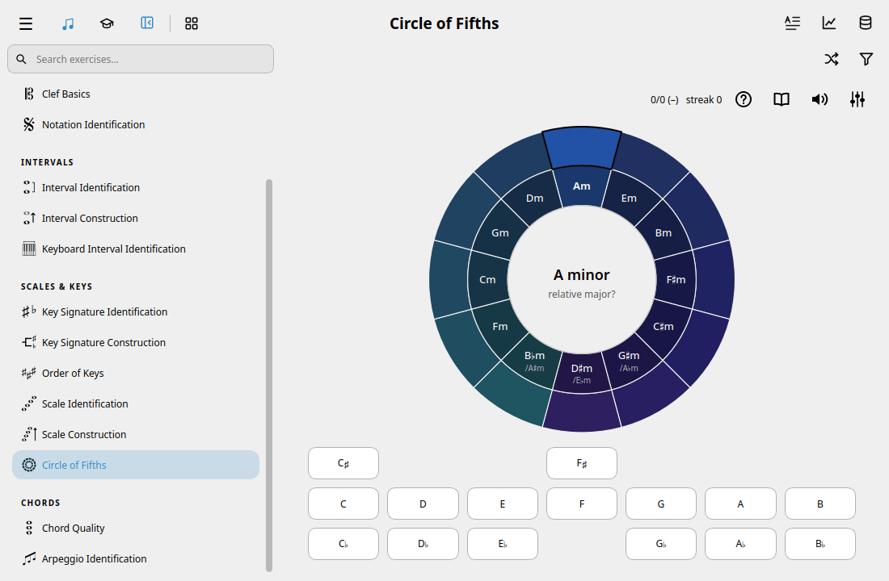
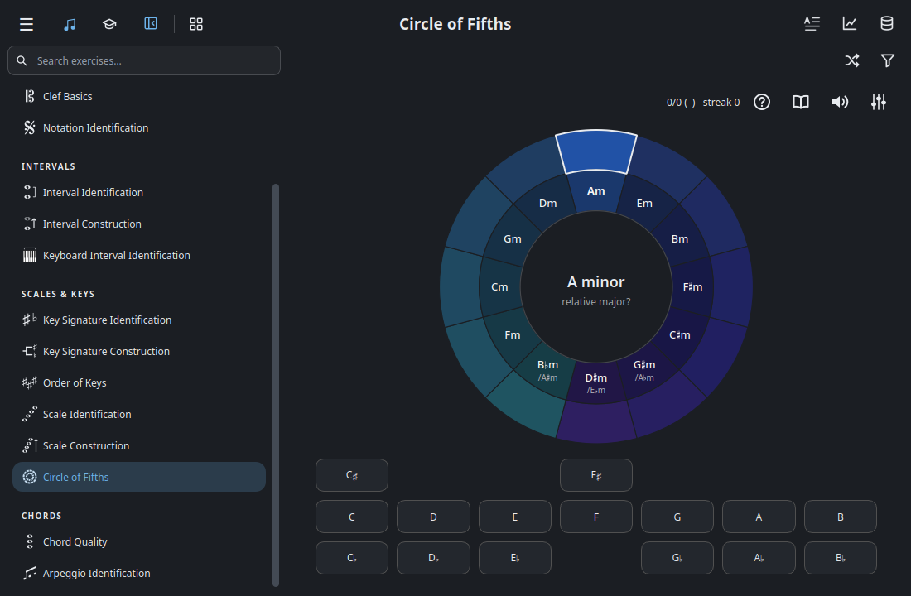


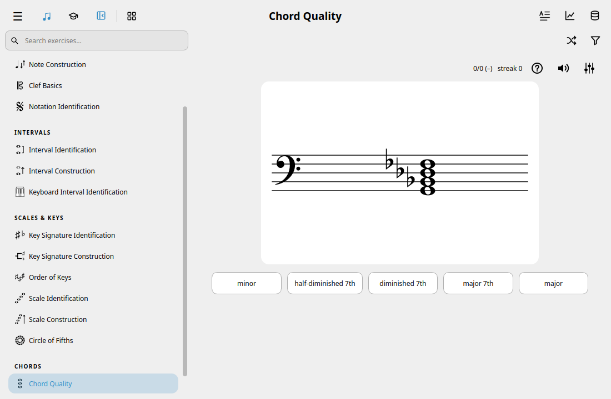
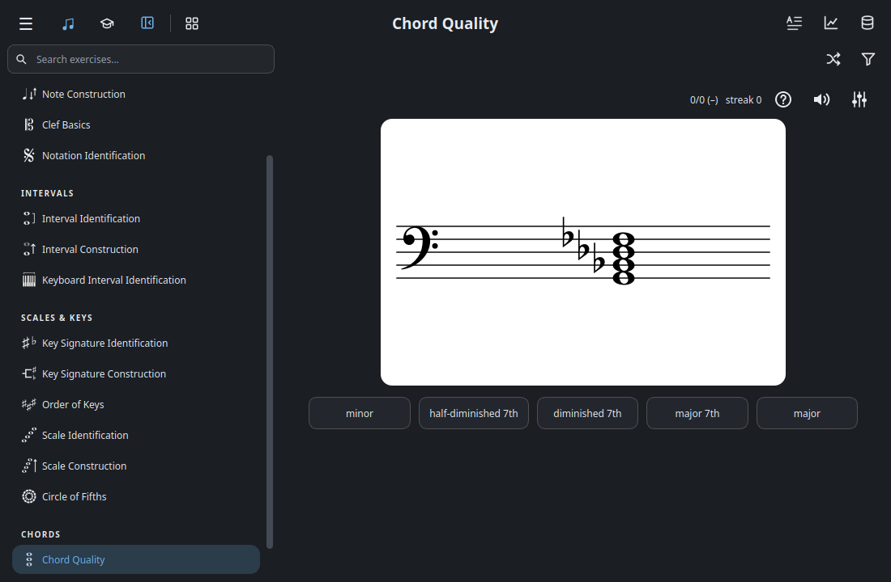

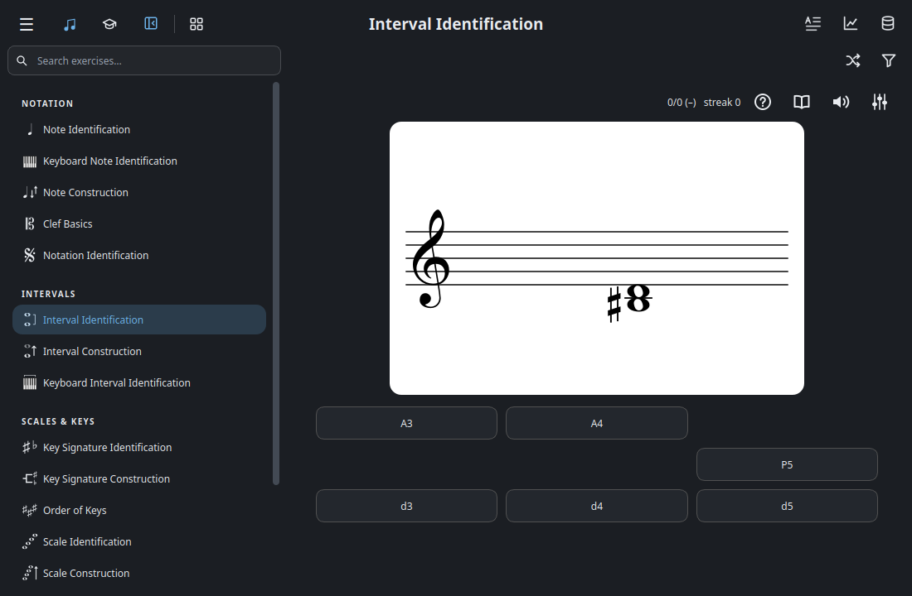
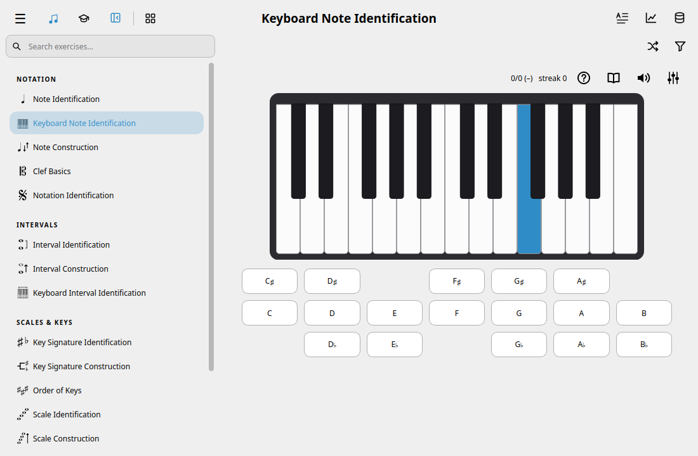

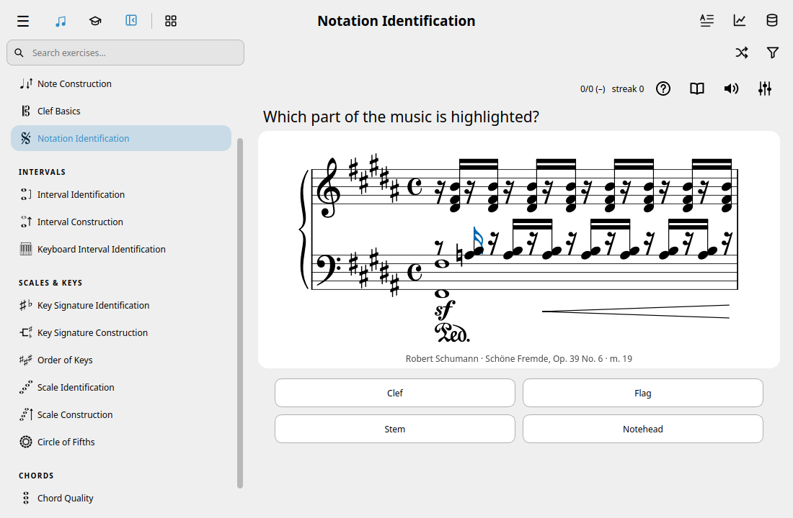
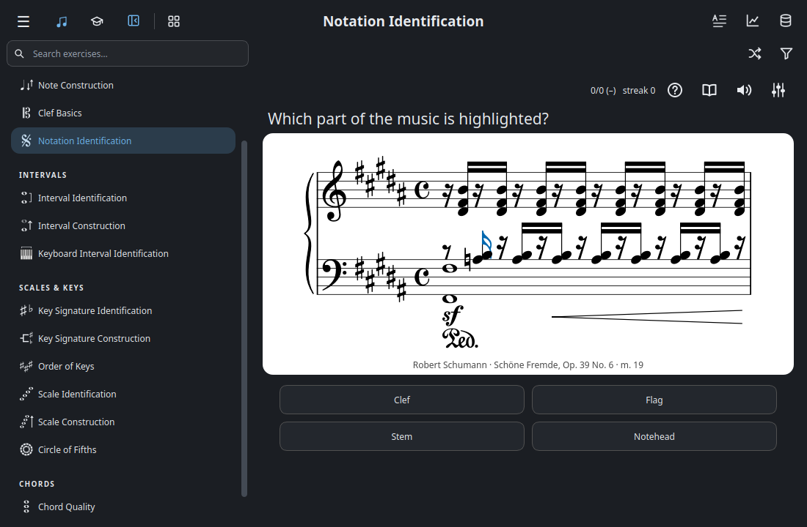
Key Features
Spaced repetition. ASRS and ARTS use your accuracy and response time to choose the next exercise question. SM-2 and FSRS schedule a due date for each review. Compare the four algorithms.
MIDI keyboard input. On Linux, play answers on a USB MIDI keyboard or use the Virtual MIDI Piano Keyboard (VMPK) to practice notes, intervals, and scales. MIDI setup.
Anki-compatible decks. Add music theory to your usual Anki reviews by exporting just the exercises you want, such as interval identification in bass clef. Anki export guide.
Statistics and a database browser. Charts of accuracy, speed and volume, plus a calendar heatmap of a year of practice, filterable by exercise and timeframe, plus a table view of everything stored. Statistics.
Notation and keyboards your way. Eleven notation styles, including Finale Maestro, Leland, Bravura and two handwritten jazz styles, and eleven keyboard looks from a modern piano to a French harpsichord. Settings.
Plugins for more instruments. An instrument pack adds artwork, recordings, exercises, lessons and glossary entries in one ZIP: name the notes on a viola fingerboard, find the interval between two highlighted harpsichord keys, or label an instrument’s parts. Install one with a registration code or from a file under Tools → Plugins, and uninstall it without losing your practice history. Plugins.
Local and private. Your history is one file on your computer. Your data.
Free and open source under the MIT License.
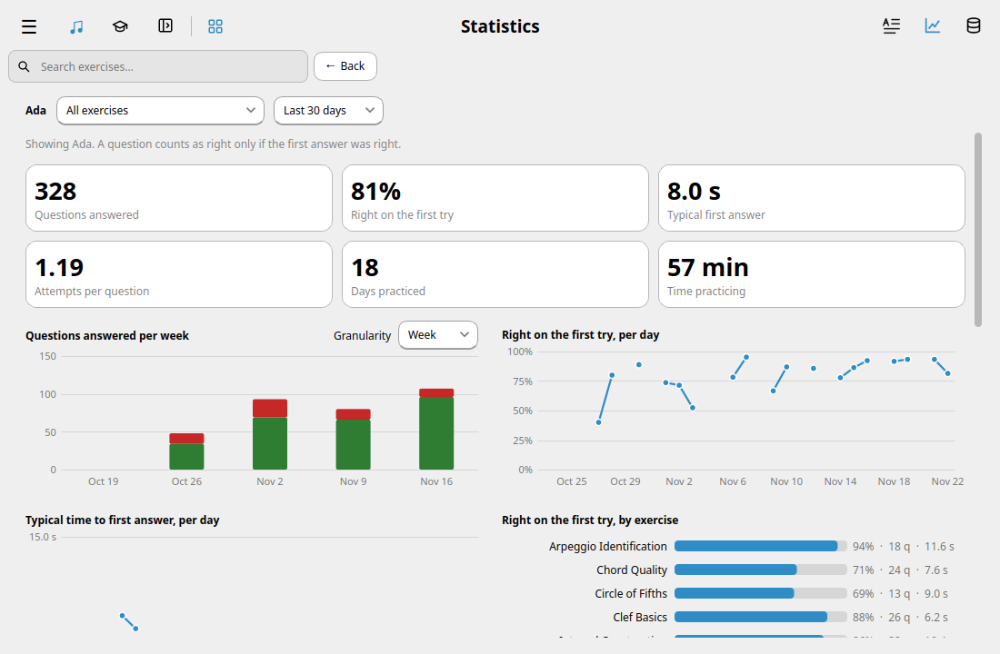
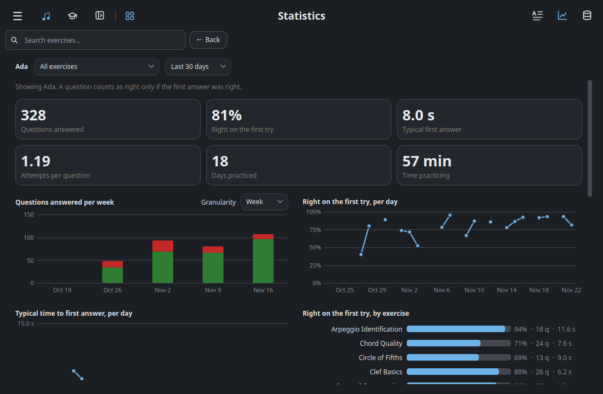
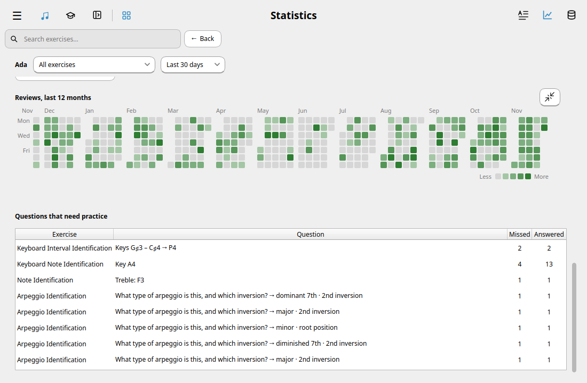
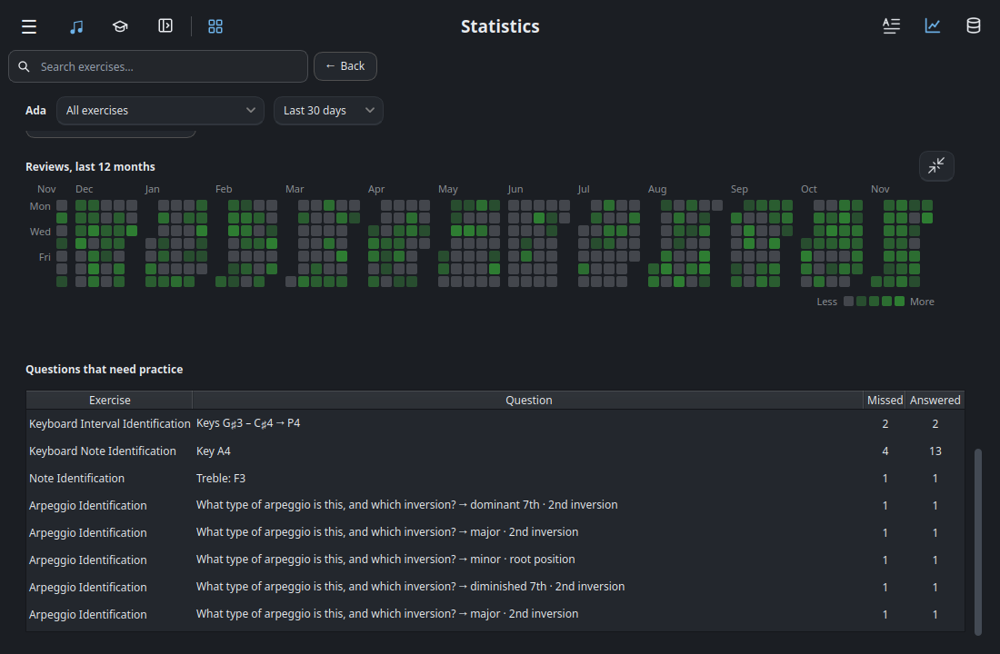
Development Status
Alto is in alpha. You can work through the lessons and practice with the exercises now, but their content and layout may change between releases. For the latest features and fixes, see the changelog. The roadmap lists current features and planned exercises.
Download Alto
Version 0.0.3 Alpha
Free for Desktop
sh install.sh install.